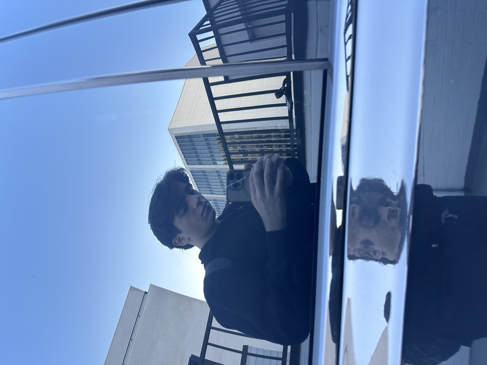
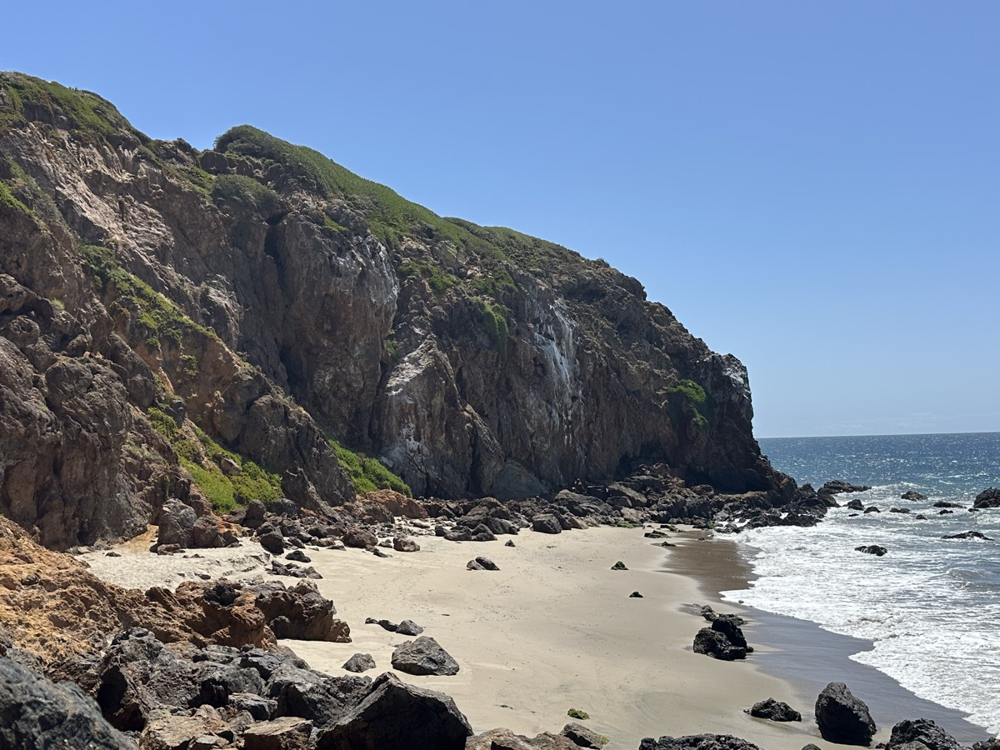
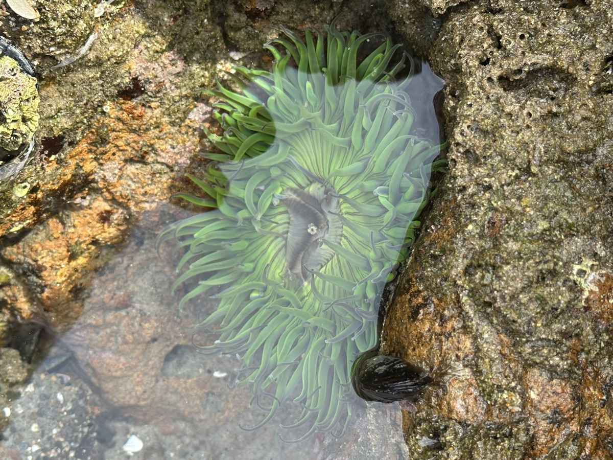
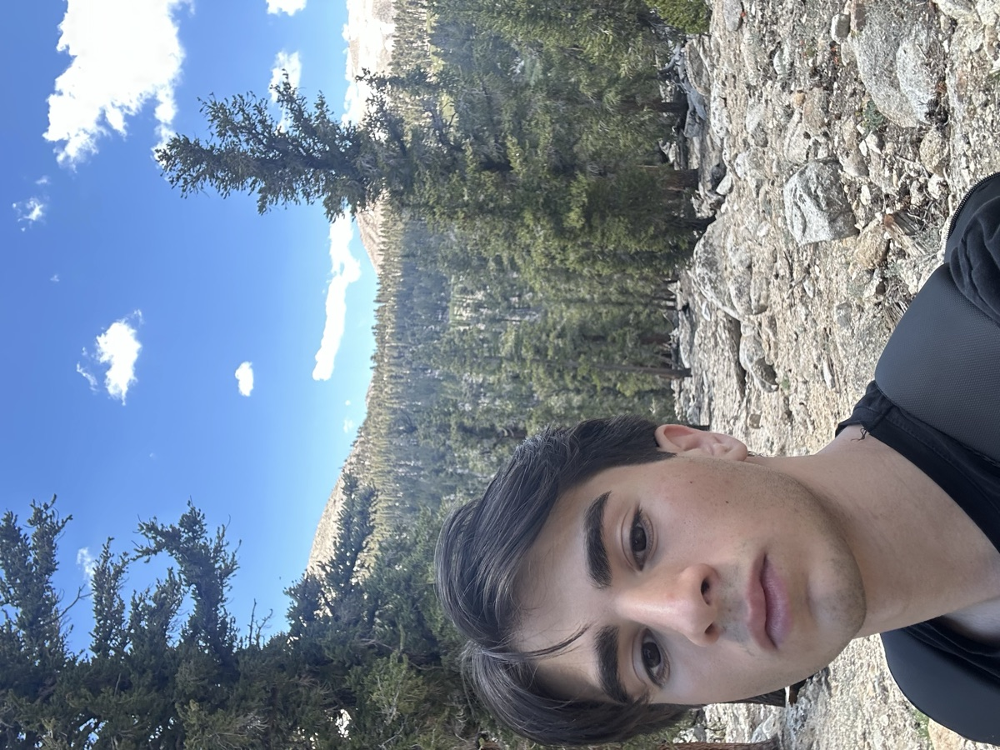
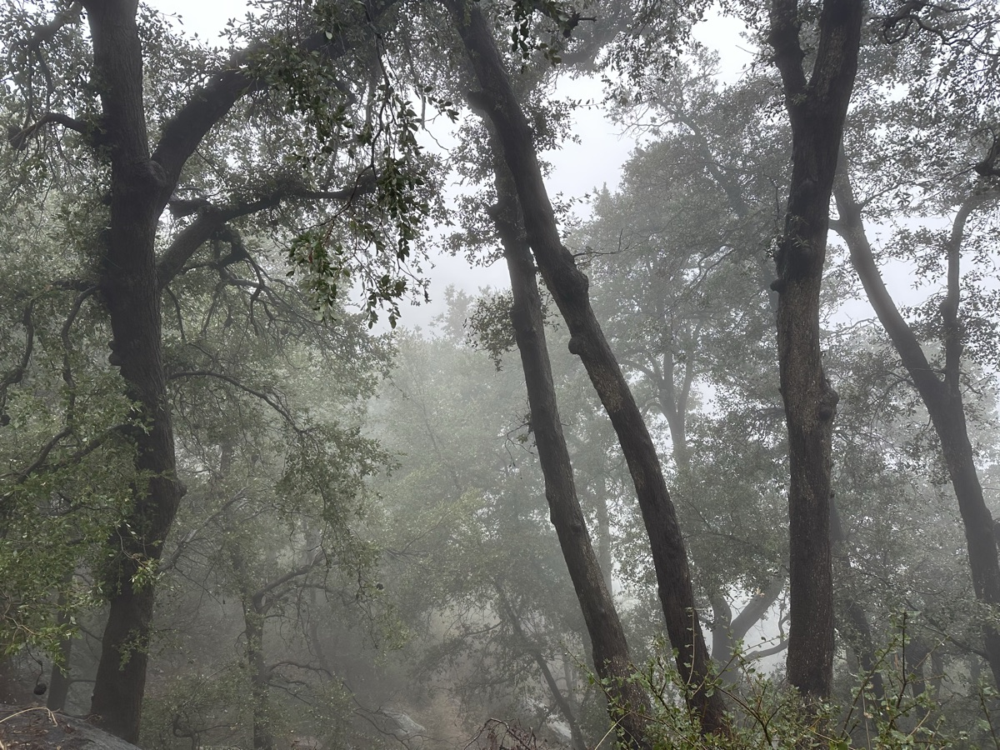
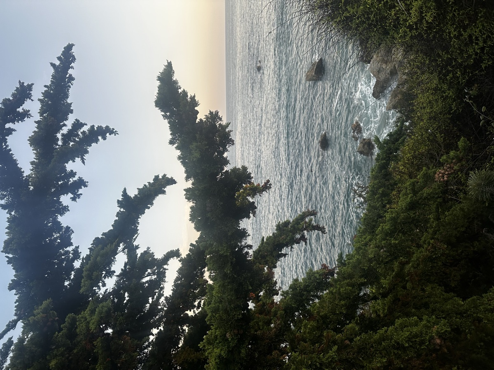
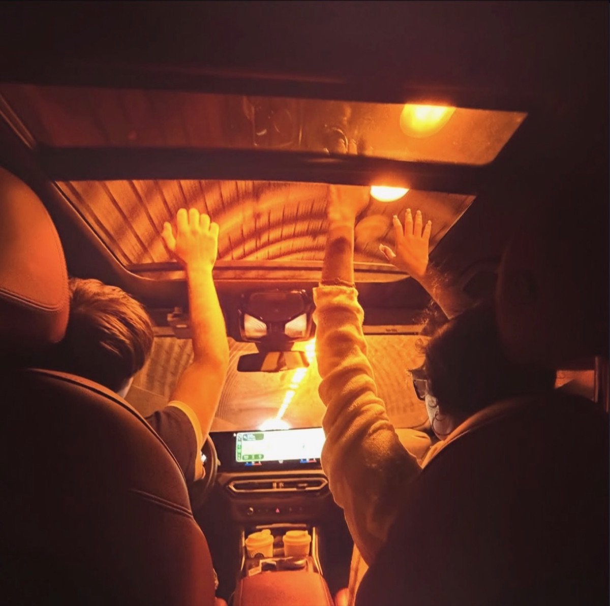
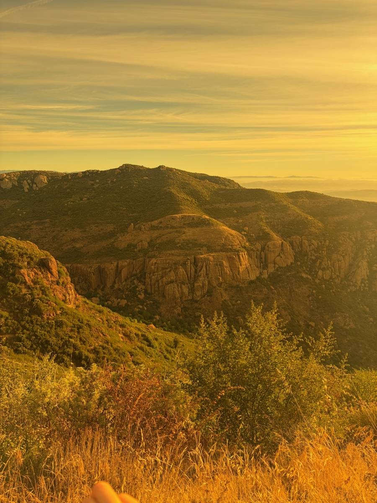

Why I started this
My journey in medicine began at fourteen. As a first-generation student, I entered the field knowing very little about where it would take me, but I quickly found a home in ophthalmology and developed a fascination with vision.
Over the years, I’ve worked across anterior segment and retina specialties, gaining experience in direct patient care, clinical research, advanced ophthalmic testing, and diagnostic imaging—including OCT, fundus photography, topography, keratometry, UBM, and Goldmann applanation. Today, I work as a senior ophthalmic technician, scribe, and diagnostic photographer at a retina practice alongside former leaders of UCLA’s Jules Stein Eye Institute.
Working with patients facing some of the most complex causes of vision loss has shaped what I want to dedicate my career to. I’ve seen specialized medicine become a beacon of hope for patients losing one of our most valuable senses, while also seeing the limitations of the diagnostic and therapeutic options available today.
I believe the future of medicine lies at the intersection of biology and computation. I founded the Computational Biology Society to bring LAVC students into that future together—creating a community where we can learn from one another, connect with research and professional opportunities, and turn our curiosity into meaningful work.

About me
In my free time I'm usually somewhere on the coastline: exploring tucked-away beaches, hiking, tidepooling, and group trips down to Malibu with friends.







Sequence, together.
Founding membership is the $10 ASO fee you'd pay to join any Valley club. First ten members are founders, on the record.